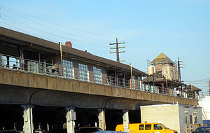
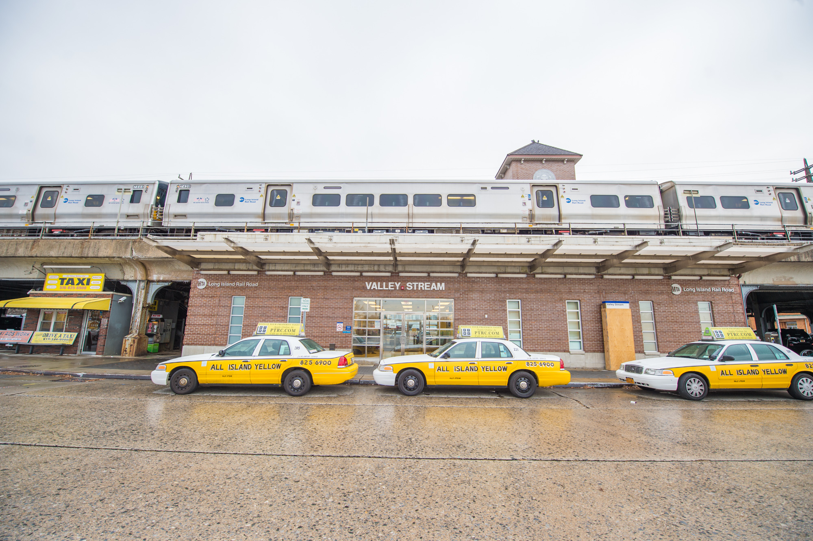
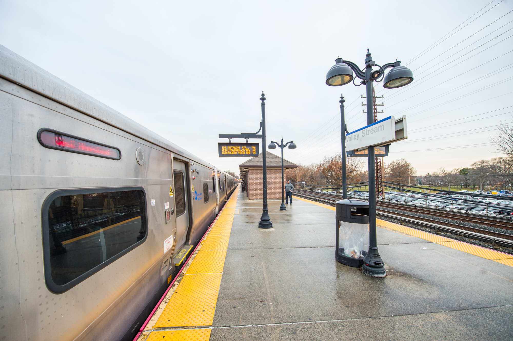
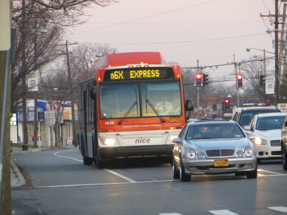
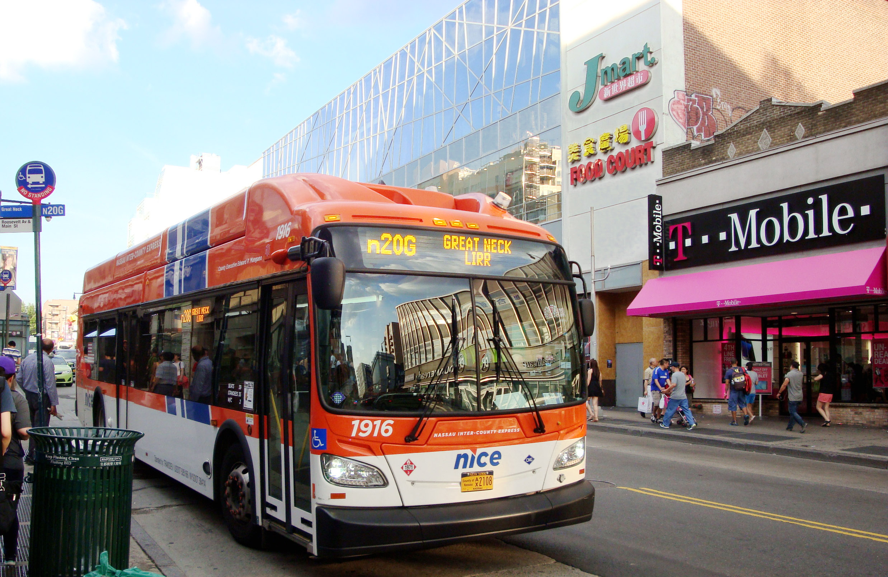
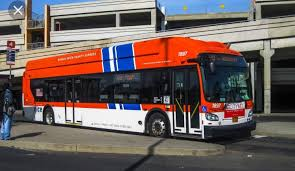

Transportation in
Valley Stream
Valley Stream LIRR Station
Valley Stream is a station on the Long Island Rail Road's Atlantic Branch serving the residents of Valley Stream, and is the first station in Nassau County. The station is located at Franklin Avenue and Sunrise Highway, west of Rockaway Avenue, and is 16.1 miles from Penn Station in Midtown Manhattan. The station is wheelchair accessible with an elevator from street level; parking facilities and taxis are available. The station is served by trains on the Far Rockaway Branch and Long Beach Branch, as well as select West Hempstead Branch trains. On weekends, the station serves as the westbound terminal for West Hempstead Branch shuttle trains, which requiring transfer to continue towards New York City.
  Nassau Inter-County Express (NICE)
Nassau Inter-County Express serves the entire region of Nassau County, as well as parts of Western Suffolk and eastern portions of Queens County. This overlap makes it possible for Long Islanders to easily travel across the island. This bus system used to operate under the MTA until 2011 when Nassau County transferred operations to a private operator Veolia Transportation. The daily ridership of NICE exceeds 100,000. Seniors and disabled passengers receive discounted fare. MetroCards are accepted on NICE routes, as well as coins, however, dollar bills are not acceptable fare.
  